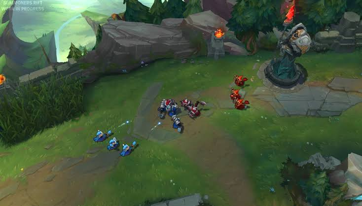

Ele não ocupa nenhuma lane e evolui matando tropas neutras espalhadas pela selva (área contornada no mapa). Atualmente muitos personagens
podem ser caçadores: tanks, assassinos ou bruisers. Algo essencial, entretanto, é a presença de alguma habilidade de CC e/ou um gap-closer (habilidades de ‘pulo’, que permitam a um campeão cruzar distâncias rapidamente), pois isso facilita
os ganks. Os caçadores possuem muitas responsabilidades num time. Eles precisam cuidar dos buffs (Lizards e Ancient Golem, no mapa) da própria jungle, marcando o tempo no qual eles morrem e nascem e impedindo que o time inimigo tenha acesso
a eles. Precisam estar sempre farmando, pois pegam menos kills do que os laners (campeões que ficam nas lanes). Precisam forçar objetivos (Dragão e Barão) ou tentar roubar objetivos sendo feitos pelo time inimigo e também gankar lanes,
ajudando seus aliados a conseguir kills ou forçar o uso de Summoner Spells dos inimigos (geralmente Flash ou Ghost, usadas para fugir), aliviando a pressão deles na rota.
O que é a Selva?

E enquanto fazem tudo isso, eles ainda precisam prestar atenção no caçadores do time inimigo, tentando prever seus movimentos para fazer counter-ganks, ou seja, ajudar seus aliados no momento em que o caçadores inimigo aparecer para emboscá-los.
Com a chegada da quarta temporada, em 2014, muitas características do jogo serão alteradas, causando impacto nas funções listadas acima. Os papéis mais afetados deverão ser o de suporte e jungler, segundo a Riot Games. Alguns exemplos
de bons caçadores são: Evelynn, Nidalee e Vi.
Evelynn Nidalee Vi
Abraço da Agonia
a Caçadora Bestial a Defensora de Piltover